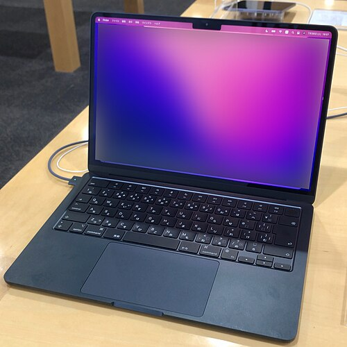
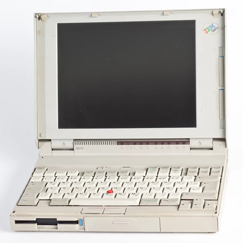
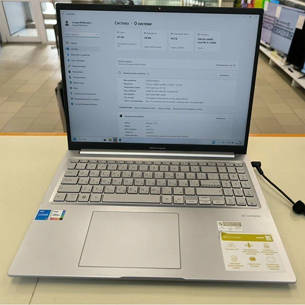
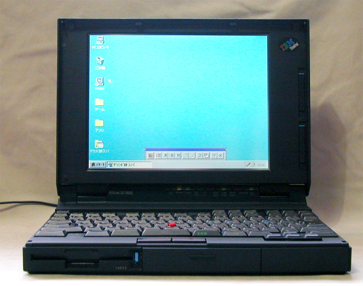
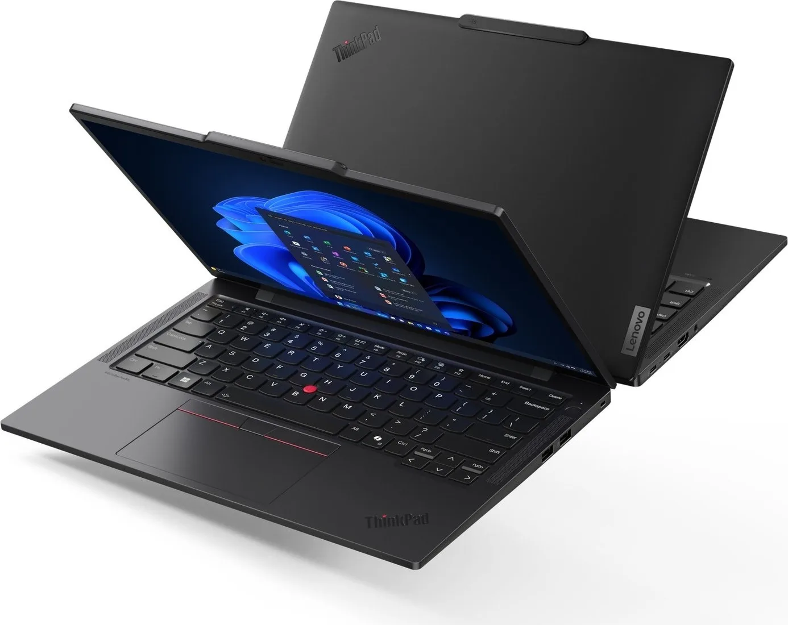

  

IBM ThinkPad 700C Страна-разработчик:Япония|Стартовая цена:5700$Первый ноутбук IBM из линейки ThinkPad. 700C не был первым ноутбуком на мировом рынке – Toshiba и Compaq к этому моменту уже начали производство своих устройств. Но дизайн и техническое совершенство этой модели дали толчок, благодаря которому со временем ThinkPad превратился в один из символов IT-индустрии.
ThinkPad поставлялся трекпоинтом, управлявшим положением курсора мыши. Трекпад и по сей день сохраняется в современных ноутбуках от Lenovo. ThinkPad 700 продемонстрировал обществу, на что способен портативный компьютер. Устройство было оснащено 10,4-дюймовым дисплеем, который на тот момент был самым большим из существующих в мире экранов ноутбуков. Среди других технических характеристик пользователи оценили жёсткий диск объёмом 120 Мб и мощный процессор IBM 486 SLC.
Спрос на ThinkPad 700C был настолько велик, что все запасы ноутбуков почти мгновенно распродали. За неделю до Рождества 1992 года в офис Президента IBM поступил звонок от Президента США Джорджа Буша: «Эй, я тут читал о ваших ноутбуках ThinkPad и решил подарить один Барбаре (супруге и первой леди). Оказывается, их уже нигде нет. Сможете достать один специально для меня?»
Естественно, ThinkPad 700C был доставлен в Белый дом ещё до Рождества, а через несколько дней IBM получила открытку с благодарностью от президента и чеком на имя компании.

ThinkPad T14 Gen 5 Страна-разработчик:Китай|Стартовая цена:1500$Разница между современным T14 от Lenovo и историческими ThinkPad эпохи IBM заключается в смене философии бренда и технологических эпох. Изначально линейку ThinkPad разработала японская команда IBM (в лаборатории Yamato) в 1992 году, а в 2005 году подразделение персональных компьютеров IBM было полностью выкуплено китайской корпорацией Lenovo. В то время как классические IBM ThinkPad отличались массивными утилитарными корпусами, съемными аккумуляторами Power Bridge, 7-рядными клавиатурами и строго классическими экранами, Lenovo сфокусировалась на снижении веса, энергоэффективности и современности. Компания сохранила фирменный дизайн и военную сертификацию MIL-STD-810, но перевела устройства на тонкие корпуса, стандарты Type-C и современные 16:10 дисплеи.
Модель выпускается в 14-дюймовом формате и поставляется с актуальными процессорами Intel и AMD. Ноутбук сочетает в себе классическую практичность и жесткие стандарты прочности: прочный корпус, устойчивый к внешним воздействиям, исчерпывающий набор портов (от Thunderbolt/USB4 до встроенного Ethernet) и фирменная клавиатура с манипулятором TrackPoint. За счет баланса мощности, автономности и ремонтопригодности T14 остается главным выбором для IT-отделов, финансового сектора и системных администраторов по всему миру.